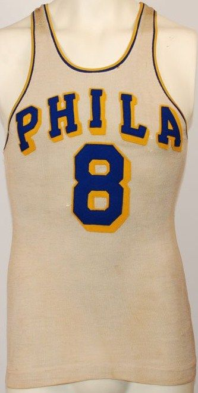
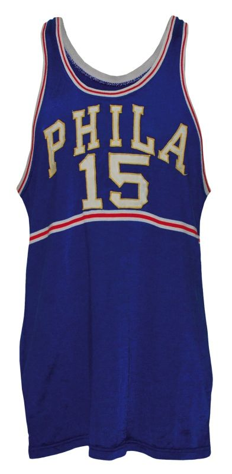
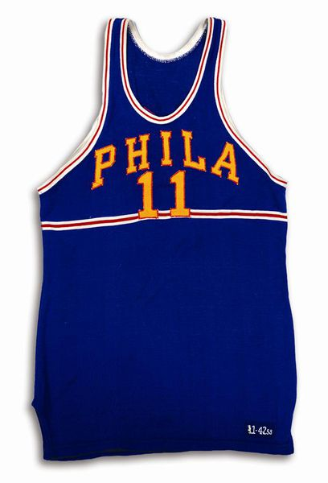
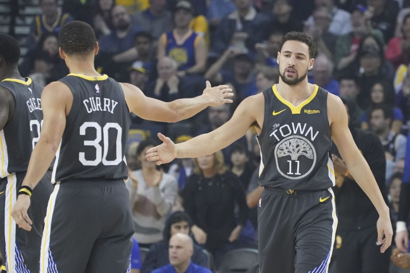

Golden State Warriors(GSW)
歷史
金州勇士（英語：Golden State Warriors，簡稱：GSW），是一支位於美國加利福尼亞州舊金山的職業籃球隊，分屬於NBA聯盟西區的太平洋組，主場球館為大通銀行中心。球隊的格言為「全隊即為一城」（The whole team is a city）。
勇士隊前身為費城勇士（Philadelphia Warriors），成立於1946年，是聯盟的創始球隊之一，曾於1947年贏得聯盟第一個賽季的總冠軍。1962年，球隊遷至舊金山灣區，更名為舊金山勇士（San Francisco Warriors）；1971年，球隊改名為如今的金州勇士。1972年，球隊遷至和舊金山只有一橋之隔的奧克蘭體育館。球隊將於2019–20賽季遷回舊金山，新球場將是大通銀行中心（Chase Center）。
球員
8 Alec Burks
6 Alen Smailagic
2 8Alfonzo McKinnie
33 Andrew Harrison
0 D'Angelo Russell
1 Damion Lee
23 Draymond Green
7 Eric Paschall
22 Glenn Robinson
10 Jacob Evans
3 Jordan Poole
5 Kevon Looney
11 Klay Thompson
32 Marquese Chriss
4O mari Spellman
30 Stephen Curry
2 Willie Cauley-Stein
球衣變化



勇士隊的經典組合
浪花兄弟
